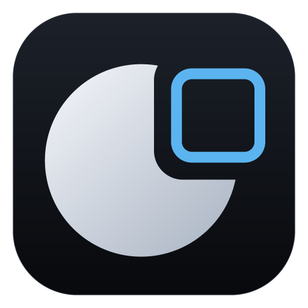

AllBlack11
Make Windows 11 truly black: title bars, borders, taskbar and Start.
Preview any look for 15 seconds, then keep it or put it back.
Native ARM64 + x64
3.7 Preview
Free & open source
github.com/TH0MSX/AllBlack11